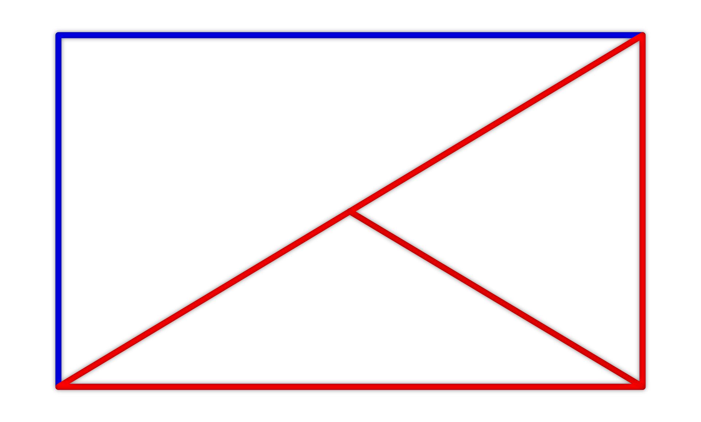
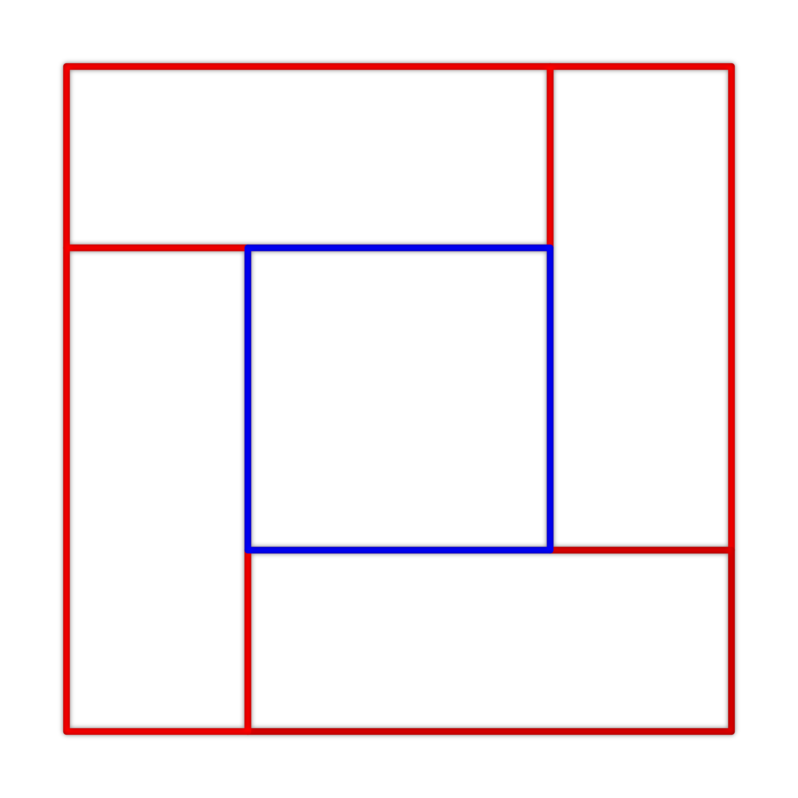
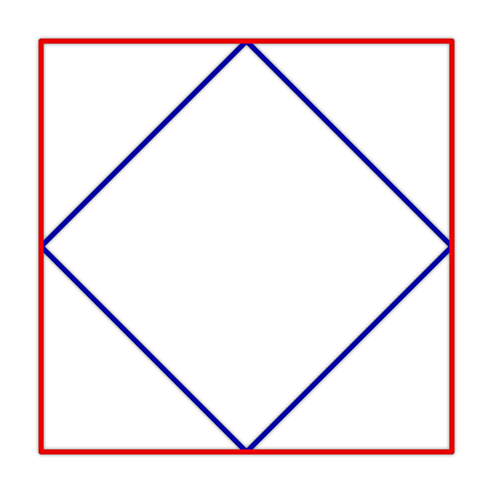
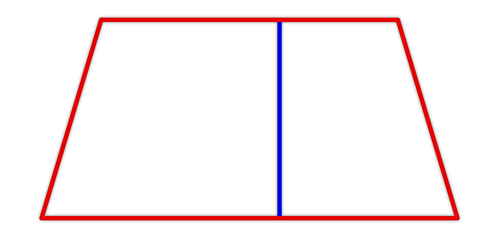

Úloha 1
Je dán rovnoramenný trojúhelník s délkou základny 24 cm. Jeho ramena jsou dlouhá 13 cm. Určete jeho obsah.

Nápověda
Dokreslete si výšku kolmou k základně. Polovina trojúhelníku nyní tvoří pravoúhlý trojúhelník. (…Pythagorova věta…)
Je dán rovnoramenný trojúhelník s délkou základny 24 cm. Jeho ramena jsou dlouhá 13 cm. Určete jeho obsah.
Dokreslete si výšku kolmou k základně. Polovina trojúhelníku nyní tvoří pravoúhlý trojúhelník. (…Pythagorova věta…)
Je dán kosočtverec s délkami úhlopříček 6 cm a 8 cm. Určete jeho obvod a obsah.
Určete délku strany – každá je stejně dlouhá (Pythagorova věta). Obsah určete jakou součet obsahů částí kosočtverce.
Je dán obdélník s délkami stran 14 cm a 48 cm. Tento obdélník je nejprve rozdělen jednou z jeho úhlopříček a následně je spojen střed této úhlopříčky s vrcholem obdélníku, který na této úhlopříčce neleží. Tímto způsobem vznikly dva rovnoramenné trojúhelníky (na obrázku červenou barvou). Určete o kolik cm² se liší jejich obsahy a o kolik cm se liší jejich obvody.
Určete délky všech možných úseček. Kde to bude nutné, použijte Pythagorovu větu. Zamyslete se v jakém vztahu je výška jednoho červeného trojúhelníku a strana obdélníku.
Je dána mozaika, která se skládá ze 4 shodných obdélníků, které obklopují čtverec (viz obrázek). Celá mozaika má obsah 100 cm². Kratší strana obdélníku je dlouhá 3 cm. Určete obsah čtverce, který je obklopen shodnými obdélníky.
Obsah mozaiky (velkého čtverce) znáte. Odtud odvoďte délku strany velkého čtverce. Určete dále delší stranu obdélníku.
Je dán čtverec o délce strany 2 cm. V tomto čtverci jsou spojeny úsečkami středy sousedních stran. Určete obsah čtyřúhelníku ohraničeného těmito úsečkami.
Zkuste přijít na to, v jakém vztahu je modrý a červený čtverec. Pokud na to nepřijdete, použijte vhodně pythagorovu větu.
Je dán rovnoramenný lichoběžník s délkou výšky 7 cm. Délky rovnoběžných základen jsou 100 cm a 148 cm. Určete obvod a obsah tohoto lichoběžníku.
Výšku si umístěte do jednoho vrcholu horní základny, dále i do druhého. V levé i pravé části vzniká pravoúhlý trojúhelník. Hledejte možné použití Pythagorovy věty.